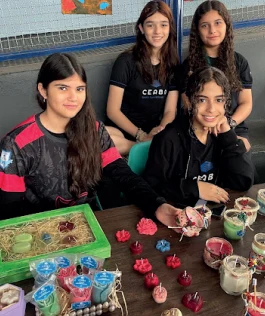

Aprender fazendo conexões
Nos Anos Finais, a aprendizagem ativa e interdisciplinar convida os estudantes a relacionar conhecimentos e trabalhar em equipe. Os projetos abrem espaço para pesquisa, autoria e experiências práticas.
Investigar e compartilhar
Na Feira de Ciências, experimentos e pesquisas são compartilhados com a comunidade. O Rally Cultural integra saberes em uma dinâmica de desafios coletivos. Na Coletânea Literária, a autoria dos estudantes ganha a forma de um livro.
Criatividade e responsabilidade
O Festival Ecológico da Canção aproxima música e consciência ambiental. A Feira do Empreendedorismo transforma os conhecimentos de educação financeira em vivências práticas. São caminhos para desenvolver protagonismo e responsabilidade.
Texto institucional elaborado a partir das apresentações pedagógicas fornecidas pela Escola CEABA.